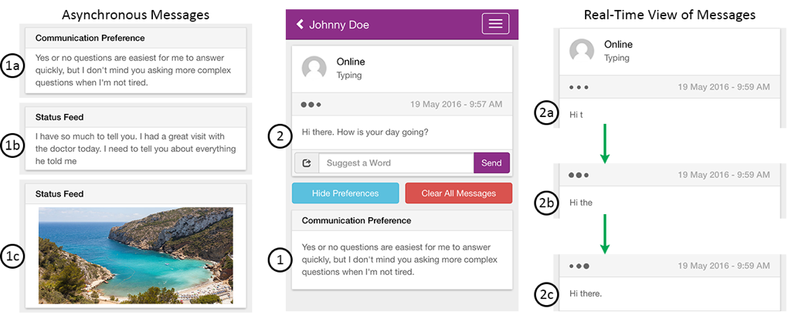
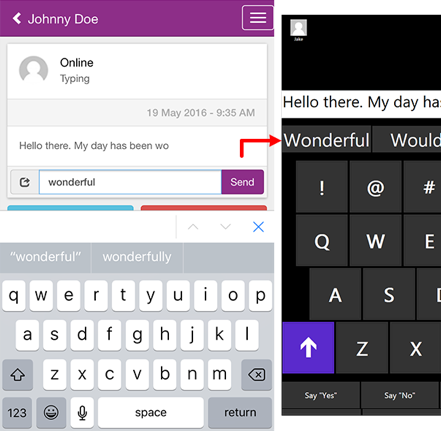
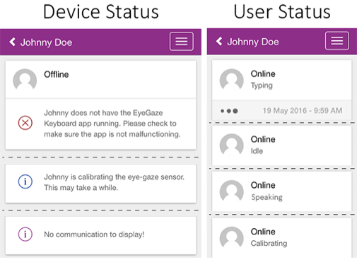

AACrobat: Using Mobile Devices to Lower Communication Barriers and Provide Autonomy with Gaze-Based AAC
Alexander Fiannaca1,2
Ann Paradiso1
Mira Shah1
Meredith Ringel Morris1
1Microsoft Research
Redmond, USA
{annpar,mshah,merrie}@microsoft.com
2University of Washington
Seattle, USA
fiannaca@cs.uw.edu
Permission to make digital or hard copies of all or part of this work for personal or classroom use is granted without fee provided that copies are not made or distributed for profit or commercial advantage and that copies bear this notice and the full citation on the first page. To copy otherwise, or republish, to post on servers or to redistribute to lists, requires prior specific permission and/or a fee.
Conference’10, Month 1–2, 2010, City, State, Country.
Copyright 2010 ACM 1-58113-000-0/00/0010 …$15.00.
Abstract
Gaze-based alternative and augmentative communication (AAC) devices provide users with neuromuscular diseases the ability to communicate with other people through only the movement of their eyes. These devices suffer from slow input, causing a host of communication breakdowns to occur during face-to-face conversations. These breakdowns lead to decreased user autonomy, conversation quality, and communication partner engagement. Attempts to improve communication through these devices has mainly focused on throughput and rate enhancement, though this has only attained meager results to date. In this work, we address this issue from the top down by considering AAC devices as a form of groupware and designing interactions around this groupware that facilitate better conversations for all involved communicators. We first present qualitative findings on issues with gaze-based AAC and end-user communication preferences; we identify several design guidelines for improving these systems and then present AACrobat, a system that embodies these guidelines and introduces novel interactions by extending gaze-based AAC devices with a mobile companion app. Finally, we present early feedback on AACrobat through three case studies of users with ALS.
Categories and Subject Descriptors
K.4.2 Social Issues: Assistive Technologies for Persons with Disabilities; H.5.3 Group and Organization Interfaces: Collaborative Computing
Amyotrophic Lateral Sclerosis (ALS) is a neuromuscular disease characterized by the degeneration and death of motor neurons (those that control the movement of muscles), ultimately leading to complete paralysis and death [25]. The progression of ALS leads to the loss of both mobility and the ability to speak, though patients often retain control of the muscles that are responsible for movement of the eyes [2]. Unsurprisingly, therefore, use of gaze-based alternative and augmentative communication technologies is critical for improving or maintaining the quality of life of people living with ALS [2]. These symptoms necessitate the use of alternative and augmentative communication (AAC) technologies designed around eye gaze input to allow people with ALS to communicate. These AAC technologies range from low-tech to high-tech, and AAC users often use a set of different devices from this spectrum depending on the needs and constraints of the moment [22]. Low-tech solutions typically involve communication boards, which are clear plastic boards with letters or symbols on them that are held by a communication partner; the ALS patient gazes at the relevant symbol on the board, and their gaze is manually interpreted by the partner (e.g., e-tran boards [24], Vocal Eyes [3]). High-tech solutions for gaze-based communication involve the use of eye trackers to control computer interfaces (e.g., Tobii Dynavox [31], PRC Accent [7]). With these high-tech devices, users typically use gaze control to type a message, and then gaze-activate a button to play that message out loud via the device’s speakers, using text-to-speech rendering technology. Use of these devices is reliant upon a number of environmental and personal factors including the amount of ambient sunlight (which causes infrared interference), the user’s use of glasses, and medications that affect pupil dilation. Unfortunately, even when users are able to effectively use these high-tech gaze-based AAC devices communication is extremely slow (about 10 words per minute) [23]. The stark asymmetry in communication rates between the AAC device user and their naturally speaking communication partners limits the type of communication users can have through these devices and causes significant communication breakdowns.
In this paper, we present AACrobat, a system consisting of extensions to an eye-gaze keyboard and a mobile companion application that are designed to alleviate many of the issues that arise due to the inherently slow rate of communication with gaze-based AAC devices. This paper presents several research contributions:
Reframing the research perspective surrounding AAC communication to expand the focus beyond low-level technical issues (e.g., gaze sensing, rate enhancement), instead taking a perspective of AAC devices as a form of groupware and considering designing systems with roles to facilitate better feedthrough between participants.
Qualitative results providing insights into the often conflicting desires of AAC device users and their communication partners when it comes to how the two mediate communication through the AAC device.
The AACrobat system, a set of AAC device extensions and a mobile app that introduce novel interactions designed to address communication challenges for gaze-based AAC device users and their communication partners.
The gathering of preliminary feedback about AACrobat from users with ALS and their communication partners.
Related Work
The use of AAC devices is critical in the care of people with ALS [4]. The only AAC devices applicable to people with ALS are those with input modalities requiring the fewest voluntary muscle movements [4]. Hill et al. [14] indicated that the fact that gaze input is usable throughout the duration of the progression of the disease has the potential to significantly improve patients’ quality of life [6]. It has also been shown that the use of eye tracking communication devices decreases the burden caregivers feel in caring for people with ALS [15].
Unfortunately, the process of gaze tracking is difficult and highly error prone, thus far leading to AAC systems that are very slow in comparison to the rate at which human speech normally occurs. Yorkston et al. [36] found that the average rate of speech of adults without disabilities was 190 words per minute (wpm). High-tech gaze-based AAC devices produce communication more than an order of magnitude slower than this [13]. On eye typing systems with dwell-based clicking (focusing on a target for a fixed period of time generates a click), able-bodied users can reach up to 20 wpm with an appropriately adjusted dwell time [22]. Dwell-based systems suffer an inherent cap on throughput due to the fact that users must fixate upon targets for some non-zero threshold of time in order to activate or click them.
It has been suggested that dwell-free eye typing systems that use “gaze gestures” analogous to swipe-style keyboards [19] could be developed with the theoretical potential to reach throughputs of up to 46 wpm (based on observations of a simulation with a perfect dwell-free gaze recognizer) [18]. To the contrary of these simulated results, the most recent dwell-free systems achieve much lower throughput rates in practice: the Filteryedping system had a throughput of 7.6 wpm for users with ALS or Duchenne Muscular Dystrophy [29], and the EyeSwipe system had a throughput of 11.7 wpm for able-bodied users [20]. The Tobii Dynavox Communicator 5 [37], a commercial dwell-free system claiming up to a 100% increase in throughput on a per user basis, became available in the summer of 2015, but independent metrics reporting end-user throughput with this system are not yet available due to its novelty. Other non-keyboard-based AAC systems such as Dasher [33,34] and EyeWrite [35] have attempted to address the throughput issue, but none have succeeded in breaking past the current cap of approximately 20 wpm for users with motor impairments. Additionally, rate enhancement techniques such as word prediction [10,13,32], context-awareness [17], and co-construction [28,30] have attempted to address this problem, but have only resulted in minor throughput improvements. As an example, Paepke et. al. created a rate enhancement system that displays an AAC user’s current text and a tree of word predictions to communication partners on a computer screen, allowing partners to guess out loud at what the AAC user is trying to say [28]. In a similar project, Roark verified that communication partners could effectively enhance communication rate by guessing to complete words being typed on a computer screen [30]. Unfortunately, neither of these studies evaluated their systems with AAC users or studied the impact of this “guessing out loud” interaction on conversation dynamics or patient autonomy.
The research community of AAC technologists has dedicated a significant amount of work towards enhancing the throughput rate of gaze-based AAC devices; this is an important challenge, though even doubling or tripling of gaze-based AAC throughput would still result in communication rates far below those of conversational speech. Thus, while improving throughput is important, it is also important to consider how to address the myriad other communication problems that result from low throughput rates. For instance, it takes a long time for users to construct contributions to group conversations due to the throughput problem, resulting in AAC device users contributing their thoughts after the topic of the conversation has already shifted. These out-of-context contributions cause conversations to break down, making it difficult for AAC device users to participate in group conversations, which contributes to their isolation [9,27]. Furthermore, this inability to rapidly produce utterances through AAC devices leads to a loss of conversational control for AAC device users [26] (i.e., it is difficult for AAC users to direct conversations). Fulcher [9] showed that using shared screens for AAC devices can help to improve communication; however, this presents potential privacy issues in that communication partners see the entirety of the information present in the AAC device interface.
A majority of prior work in improving communication through gaze-based AAC has focused on addressing communication issues in a bottom-up manner via throughput and rate enhancement, rather than designing the system to facilitate effective communication given the low throughput inherent in the devices. With the exception of the study of co-construction [28,30], previous work in this field has viewed the design of gaze-based AAC systems without regard to the role of communication partners in facilitating effective communication. As described by Fulcher [9], this bottom-up approach is one-sided, in that it puts the burden of facilitating effective communication solely on the AAC device user without considering the social aspect inherent in interpersonal communication. Acknowledging a similar issue for aphasia patients, Kagan presented the supported communication intervention for people with aphasia and their communication partners [16]. Supported conversation focuses on creating a feeling of autonomy for the person with aphasia while specifically teaching communication dyads to share the communication load rather than simply training the person with aphasia to develop independent communication skills. In practice, supported conversation involves conceptual training in which communication partners are taught both what it may be like to personally experience aphasia and the impact it can have for them to learn skills for supporting their aphasic communication partners, followed by hands-on instruction and practice of communication skills with people with aphasia. In this research, we take inspiration from both the motivation behind supported conversation and from the concept of groupware [1], thinking of AAC software as a shared workspace through which effective communication should be enabled by sharing the communication burden among all interlocutors. This perspective inspired our work to explore methods of facilitating better communication by looking specifically at how communication partners currently interact with AAC users and their software and how these interactions could be augmented via explicit feedthrough mechanisms [1] to improve communication.
Formative Study
Responses to the question, "How do you try to help the AAC device/software user?" for the communication partners who indicated they have attempted to help AAC users.
Individual Responses
“Read over shoulder, sometimes hit delete word or backspace for him”
“Guess the end of a sentence before it has been completely typed and spoken”
“Looking at typed message. Trying to finish sentence/thought”
“Sometimes he just needs a few words and I know him well enough that I get what he's saying it save [sic] us both time.”
“Making questions easier to answer, being very specific.”
“I give them my advice based off my own experience”
To better understand the issues faced by both gaze-based AAC users and their communication partners during communication, we conducted a formative study to obtain qualitative feedback from the target user groups. We designed this formative study to explore communication issues as they relate to the interaction between AAC users and various types of communication partners.
Method
We created two online questionnaires to gather qualitative data: one for gaze-based AAC users, and one for their communication partners . We chose an online questionnaire as the data-gathering method because it was suited to the unique constraints of working with ALS patients – the format allowed respondents to answer questions at their own pace, take rest breaks, and avoid the need to travel. Participants were recruited through an email list for an ALS organization in our local metropolitan area consisting of people with ALS and family members and caregivers of people with ALS.
The AAC User questionnaire contained 33 questions and took respondents twenty-seven minutes on average to complete. Inclusion criteria were that users must both be diagnosed with a degenerative neuromuscular disease and must own a gaze-based AAC device. Eight people (six male) completed the AAC User questionnaire; respondents’ ages ranged from 44 to 57 years (mean 51.5). All respondents had been diagnosed with ALS in the last ten years and completed the questions without the assistance of a caregiver.
The Communication Partner questionnaire contained 29 questions and took respondents thirteen minutes on average to complete. The only inclusion criterion was that participants must know and communicate with someone who has a degenerative neuromuscular disease and uses a gaze-based AAC device. Nine people total (all female) completed the Communication Partner questionnaire; respondents’ ages ranged from 42 to 68 years (mean 54.8). All respondents self-identified as spouses, family members, caregivers, and/or friends of people with ALS.
Note that this relatively small sample size is not surprising given (1) the low incidence rate of ALS, which affects only 2 people per 100,000 [25]; (2) the technical difficulty for ALS patients dependent on gaze-based AAC in answering questions autonomously; and (3) the additional demands on ALS patients’ time, with respect to issues such as extreme fatigue and the desire to save energy for high-priority interactions given their extremely shortened lifespan. As with many studies and methods, readers should be aware that there may be self-selection biases; for example, it may be the case that respondents with the skill or motivation to complete an online questionnaire may have different perspectives and experiences than those who did not participate.
Responses from AAC users indicating their level of comfort with communication partners attempting to help them communicate (N = neutral, SU = somewhat uncomfortable, VU = very uncomfortable). Note that the remaining two options, comfortable and very comfortable, were never chosen.
Response/Reason
(SU) “It erodes one’s confidence over time. It prevents nuanced conversation by cutting it short when person reading or guessing thinks they know the nature of the full communication from a few words.”
(N) “It doesn't bother me there trying to help and most of the time it turns into a game. There are times it does start to get on my nerves.”
(VU) “It's not socially acceptable. Makes me more aware of my losses in capabilities from this disease…”
(N) “It depends on the situation. If I am asking for something or simply conveying information, I am very comfortable with someone anticipating my comments but if I am in a conversation with someone or a group of people, I am very uncomfortable with someone speaking for me and/or reading over my shoulder.”
(SU) “Because I’ve always been a detailed, long story type guy.”
(SU) “I need independence.”
Findings
Partners' Roles
Of the nine respondents who completed the entire Communication Partner questionnaire, six indicated that they had attempted to help gaze-based AAC users to communicate or communicate faster in the past. Of these six, five indicated that this was related to communication problems the AAC user experienced, including the AAC user getting left behind in conversations that move faster than they are able to generate speech (five respondents), the AAC device having a technical issue rendering it temporarily unusable (four respondents), the AAC device generating nonsensical output (two respondents), and message generation taking so long that they were unsure if the device was broken or not (two respondents).
Of the six respondents to the Communication Partner questionnaire who indicated that they help AAC users to communicate or communicate faster, all six described themselves as having a moderator and/or facilitator role when communicating with the AAC user. Examples of these responses can be seen in Table 1. Additionally, when asked how comfortable the communication partners were with performing these actions to try and help the AAC user, five of the six respondents indicated on a five-point scale that they were either “neutral,” “somewhat comfortable,” or “very comfortable.” Likewise, five of the six respondents indicated that they believed the AAC user to be either “neutral,” “somewhat comfortable,” or “very comfortable” with the assistance they rendered.
Subjective ratings of AAC users' comfort level with communication partners attempting to help them communicate broken down by relationship with 0 being "Very Uncomfortable" and 4 being "Very Comfortable." Bars indicate standard error.
Autonomy
Interestingly, the communication partners’ views were in contrast to those of the AAC users. Of the six respondents who frequently use their communication devices, four responded that they were either “neutral,” “somewhat uncomfortable,” or “very uncomfortable” (the lowest three ratings on a five-point scale) with spouses attempting to help them communicate or communicate faster and 5 of the 6 respondents indicated the same for close friends (all communication partner respondents were spouses or close friends; see Table 2). When broken down by the type of relationship between the AAC user and the communication partner, there was a general trend indicating AAC users are most comfortable with communication assistance from those partners whom they are closest to socially (Figure 1). Additionally, AAC users were most comfortable sharing information from their device to those partners with whom they are closest (Figure 2).
Discussion of Formative Study Findings
Several implications for design emerged from the results of our formative study. Of greatest salience was the AAC users’ desire to maximize their autonomy. Due to the fact that degenerative neuromuscular diseases like ALS gradually remove a person’s ability to both manipulate the surrounding world and communicate with other people, they cause patients to gradually become more dependent on others in order to survive. These diseases are not often associated with cognitive deficits, meaning that patients are fully aware of the losses they are experiencing. Through statements such as those in Table 2, respondents made it clear that any AAC technologies developed for them must either preserve or increase what little autonomy they still have. While in theory all AAC technologies could be considered as aiming to support autonomy to various extents, our results indicate that current solutions are insufficient in this respect, and may inadvertently reduce a user’s autonomy, such as by creating behaviors such as over-the-shoulder peeking that negatively impacted our participants. We captured this in the first design guideline for the development of our new system: The AAC system must preserve or increase users’ autonomy.
Another interesting result was the disconnect between how communication partners view interactions versus how AAC users view interactions. The first observation related to this result was that in the responses in Table 1, half of the partners describe looking over the AAC user’s shoulder as they type. While this may have ramifications on the autonomy of the AAC user, it also indicates that the communication partner has highly limited awareness of the current communication (i.e., up-to-the-moment understanding of the communication being formed on the AAC device) without observing the visual output of the AAC device intended for the device’s user. A second observation related to this theme was that communication partners want to help the AAC users to communicate and they are comfortable doing so, whereas AAC users are uncomfortable with help being rendered since it encroaches upon their perceived autonomy. Together, these observations indicate that AAC systems should be designed according to the previously discussed guideline of autonomy, but should also attempt to balance this with engaging the communication partners in a way that capitalizes on their desire to help the AAC user and provides them with an accurate mental model of the interaction. We formulated this into the second design guideline for our new system: The AAC system should directly engage communication partners (in a manner that respects the autonomy of the AAC user).
The final core result was the concept of privacy among various types of communication partners. The AAC users indicated that they felt most comfortable with receiving communication help from their closest communication partners (such as spouses) and least comfortable receiving such help from general acquaintances or strangers. This was echoed in the amount of information respondents indicated they were willing to share with communication partners. These observations align well with Blackstone’s Circles of Communication Partners paradigm [5]. Taking inspiration from this paradigm, we synthesized these observations into the third design guideline for our new system: If the AAC system engages communication partners by sharing communication data, it must allow the AAC user to control how information is shared.
Subjective ratings of AAC users' comfort with sharing AAC device information with communication partners before choosing to render speech audibly. 0 is "Share Nothing," 1 is “Share Full Thoughts,” 2 is “Share Words,” 3 is “Share Characters,” and 4 is “Share Everything.” Bars indicate standard error.
AACrobat

Example of Asynchronous Messages (1, 1a, 1b, 1c) and Real-Time View of Synchronous Messages (2, 2a, 2b, 2c). The center image shows the entire interface of the AACrobat mobile companion app, incorporating the sections for both asynchronous and synchronous communication. 1a shows an example communication preference message, 1b shows a pre-composed block message, and 1c shows a multimedia message. 2a – 2c show the propagation of communication data in real-time for synchronous messages.
Given that the three design guidelines we synthesized from our formative study are in line with issues that have been established in previous literature [4], yet are still not adequately supported by current AAC systems, it is clear that we need to change the way we think and go about the design of AAC systems in order to actually support these core needs. To this end, it is helpful to understand how different models of disability have influenced the way we think about and design AAC systems. While many different models of disability exist [21], the medical model has most strongly influenced the design of current AAC systems. The medical model treats people with disabilities as patients to be fixed or cured, leading to the design of AAC technology that is focused on functional limitations of the disabled person (e.g. the ability to generate speech for people with ALS) with much less attention paid to other factors like the other individuals who also interact with the AAC technology (e.g., communication partners). In this work, we are inspired by the social model which instead treats disability as being socially constructed, and rather than attempting to fix people with disabilities, attempts to remove physical and attitudinal barriers preventing inclusion.
With the social model of disability in mind, we approached the design of AACrobat as a groupware system in which all communicators are working together to facilitate an effective communication, shifting the burden of communication from the AAC user to the entire group of communicators. In groupware, the concept of feedthrough [11] describes the feedback produced by a system when an artifact of the system is manipulated, informing other users of the system about the manipulation. In this design, we leverage feedthrough in order to provide all communicators with greater awareness of the AAC user’s communication with respect to the AAC user’s state, the content of the AAC user’s communication, and the context surrounding the communication. We leverage Gutwin’s definition of awareness in shared workspaces [12] to define awareness in this context as communication partners’ up-to-the-moment understanding of the AAC user’s communication.
We named our system AACrobat, a hybrid of “AAC” and “acrobat,” because like an agile acrobat, our system’s goal is to increase the agility of AAC users’ and partners’ communication styles. AACrobat consists of extensions to simple eye-typing AAC software plus a mobile companion app. The communication partners can install the mobile companion app on their phone for use when conversing with the AACrobat user. The eye-typing application is a dwell-based keyboard compatible with the Tobii EyeX sensor and the Windows 8.1/10 operating systems. The mobile companion app was developed using HTML5 and JavaScript in the Apache Cordova framework, allowing it to run on Android, iOS, and/or Windows Phone. Communication between the AAC software and the companion app is facilitated through a real-time NoSQL database system [38].
Features
We designed each of AACrobat’s features to address one or more of the design guidelines developed via our formative study. We developed AACrobat primarily to facilitate the scenario of face-to-face, synchronous conversation (though some testers were interested in appropriating it for other conversational scenarios, as we discuss later in the User Feedback section). In this section, we present the major features of AACrobat within the context of the design guideline they target.
Engagement of Communication Partners
The foremost goal of AACrobat is to engage and improve awareness of communication partners during co-located/synchronous conversations with AAC users. In order to accomplish this goal, AACrobat has two core features: real-time view of synchronous messages and asynchronous messages.
Real-Time View of Synchronous Messages
The first feature designed to engage and improve awareness of communication partners in synchronous communication is the real-time view of synchronous messages (Figure 3). This feature displays the communication content that the AAC user is generating as they generate it, within the AACrobat mobile companion app, acting as an explicit feedthrough mechanism for the communication content. This provides communication partners with an accurate awareness of the content of the ongoing communication and potentially allows them better understand what the AAC user is attempting to say. This feature is a distinct shift from designs based in the medical model in that it allows for AAC-mediated conversations to be continuous in the same way as traditional speech-based conversations (i.e. partners “hear” things as they are said), rather than simply allowing for the eventual generation of speech. An important effect of this feature is that it ensures that communication partners do not need to read over the shoulder of the AAC user when unsure of what the AAC user is attempting to write.

Example of co-construction functionality in the companion app inserting a suggestion into the prediction bar of the AAC application. When the communication partner sends a word or phrase suggestion, it appears in the AAC application’s prediction bar among the system-generated predictions.
Asynchronous Messages
The asynchronous message feature allows AAC users to prepare communication content before a synchronous interaction occurs. These messages are displayed at the bottom of the AACrobat mobile companion app (Figure 3), allowing communication partners to read them while the AAC user is constructing speech for the current synchronous conversation, offering content that can fill the conversational gaps that occur due to the low throughput of AAC communication. This is unique from standard message banking techniques in existing systems in that it is designed for sending messages specific to a given conversation the AAC device user wants to have, and it sends the messages automatically when the communication partner connects to the app, requiring no additional effort on the part of the AAC device user. Three types of asynchronous messages can be sent from an AAC device: communication preferences, pre-composed blocks, and multimedia.
“Communication Preference” messages are a medium for AAC users to express their preferred interactions and etiquette when communicating. For example, this could include messages such as, “Please ask only yes or no questions,” “For private conversations, please read over my shoulder so I do not have to display my thoughts for all to hear,” or “Please do not finish my thoughts for me.” These are particularly useful as a form of communication partner education, simplifying the process of instructing partners in the specific communication strategies and preferences of any given AAC user. Communication Preference messages are always displayed on the first time a communication partner connects with an AAC user through the AACrobat companion app.
“Pre-Composed Block” messages are general communications that the AAC user wishes to share with a communication partner, but would like to prepare ahead of a synchronous conversation. These messages serve to allow AAC users to compose longer or more complex thoughts than may be possible to construct during synchronous communication, thereby acting as a method for providing communication partners with awareness of the context for a given conversation. While Communication Preference messages are only displayed the first time a communication partner connects with an AAC user, all Pre-Composed Block messages that the AAC user created when the communication partner was not connected with them are available when the communication partner next connects with them through the AACrobat mobile app.
Finally, “Multimedia” messages allow AAC users to take pictures on their device and send them to the AACrobat companion app by dwelling their gaze on a camera-icon keyboard key. While this feature only currently supports sending images, it was designed so as to be easily extensible for sending any form of multimedia content that modern AAC devices, which typically utilize tablet computers, can capture (e.g., audio or video). Multimedia messages allow AAC users a rich channel for sharing their experiences with others, and can increase throughput by reducing the need to type descriptions of visual scenes, again supporting awareness of the context surrounding communication.
Autonomy
Another design guideline derived from our formative study was the necessity for systems to embrace and enable the autonomy of the AAC user, beyond the level of autonomy provided by status quo solutions. We respected this design guideline throughout the development of AACrobat; two particular features have this motivation at their core: autonomy-preserving co-construction and status indicators.
Autonomy-Preserving Co-Construction
Technology-assisted co-construction has the potential to improve the rate of communication of people using gaze-based AAC; however, the method through which co-construction is implemented can have significant effects on the perceived autonomy of the AAC user, as indicated by our formative study. Therefore, our implementation of co-construction through the AACrobat companion app was carefully designed to respect the autonomy of the AAC user while leveraging the contextual knowledge and shared history of the communication partner to potentially improve communication.
Figure 4 shows how communication partners can use the mobile app to send suggestions of words or phrases to the AAC device as the AAC user is constructing a block of text. These suggestions are displayed in the prediction bar of the AAC interface in the same manner as predictions provided by the AAC software. This subtle interaction empowers the AAC user by ensuring both that AAC users are not interrupted by communication partners guessing at what they are typing, and that AAC users have absolute control over the degree to which they utilize co-constructions from their communication partners. Additionally, this interaction has the benefit of further engaging communication partners by providing them a method to directly interact with the block of communication as it unfolds rather than simply waiting for a block of communication to be completed before hearing it spoken by the system’s generated speech.

Indicators for device state (left) and AAC user state (right).
Status Indicators
In the formative study, it was clear that communication partners did not always have an accurate awareness or understanding of what was occurring on an AAC device without looking over the device user’s shoulder to view the device’s visual state. When communication partners look over the AAC user’s shoulder instead of communicating face-to-face, it decreases the device user’s autonomy by making their ability to communicate and interact with others dependent upon the communication partner’s effort, as well as being an awkward invasion of their personal space, and of the privacy of items on their screen that they may not wish to share. To minimize this effect, AACrobat was designed to incorporate simple visual feedback indicators of the state of the AAC device at several different levels within the mobile companion app (Figure 5). This feature is reminiscent of status indicators in mainstream Instant Messaging applications that reveal simple state information such as whether another user is currently typing or not; however, status indicators are typically used in remote communication scenarios – due to the unique constraints of face-to-face communication with eye-gaze AAC users, we have adapted this concept to a co-located scenario. At the coarsest level of information, the app has indicators to show whether the AAC device is offline, the AAC user is calibrating the gaze system, or the AAC device is operating normally. This provides general feedback to the communication partner as to whether the device is malfunctioning or not. At a finer-grained level of information, AACrobat indicates what the AAC user’s current state is within the system. This includes states for when the user is idle, typing, or “speaking” (having composed text read aloud via a synthesizer); it could easily be extended to include additional states such as “emergency” or “assistance needed” based on explicit signaling from the AAC user or readings of the state of the AAC user’s communication and healthcare apparatus. This level of feedback makes it possible for communication partners to know when the AAC user is forming a thought versus when they are simply listening to a conversation.
Privacy and Control
While allowing end users to control privacy settings for sharing personal information in general applications is important, it is critical in the development of social AAC systems since limiting privacy may have the effect of limiting the autonomy of AAC users. To this end, AACrobat provides two features that allow AAC users to customize exactly what information is shared with communication partners and how that information is shared: mobile audio and levels of sharing.
Mobile Audio
This novel interaction allows AAC users to play generated speech either from their own device (broadcast audio, audible to all people in a room) or on the connected mobile phones (mobile audio, audible only to connected mobile app users). This allows the AAC user to decide whether or not they wish to have a public conversation or a private or side conversation, breaking down a long-standing communication barrier present in many current AAC devices. Additionally, in conjunction with the real-time view of synchronous messages feature, mobile audio has the potential to enable telephony-like long distance communication, though it was originally designed for co-located communication.
Levels of Sharing
The levels of sharing feature allows AAC users to decide what granularity of communication data partners are able to see in the companion app. This feature was designed to strike a balance between two competing issues. First, gaze input is relatively slow and tedious, therefore requiring users to explicitly set privacy permissions for every connected communication partner could make the system too tedious to use. Second, as determined in the formative study, AAC users want to share different amounts of information with different types of communication partners (e.g., share more with family and less with general acquaintances). We therefore took inspiration for the design of the privacy settings interface from the Circles of Communication Partners paradigm [5,8], allowing AAC users to classify communication partners into social circles and set privacy permissions for entire circles rather than individual partners. AACrobat currently includes the five social circles “Family,” “Friends,” “Work,” “Medical,” and “Other” that directly correspond with Blackstone’s original circles “Family,” “Friends,” “Acquaintances,” “Paid Workers,” and “Unfamiliar Partners” [5].This is both a user management feature and a privacy feature. Communication partners must request to connect with an AAC user through the companion application and the AAC user must approve the request and place the communication partner into a social circle before the communication partner will be able to see any information from the AAC device. AAC users can then use a simple interface to set the permissions for an entire circle of communication partners. This allows users to limit the amount of information presented in the real-time view of synchronous messages feature to either show updates character-by-character, word-by-word, sentence-by-sentence, block-by-block (fully composed thoughts, shared as text via the app only when the AAC user decides to render that block aloud via the voice synthesizer), or to only show status information and not show text at all. In order to reduce the amount of effort required from AAC users, we chose sensible defaults for these privacy settings, setting “Family” to character-by-character, “Friends” and “Medical” to word-by-word, and “Work” and “Other” to block-by-block.
User Feedback
Due to the nature of ALS being a very low-incidence disease (2 per 100,000) [25] that causes extreme mobility challenges, reaching many people with ALS for in-depth studies with a large number of participants is very challenging. We therefore decided to focus initially on direct case-study-based feedback, observing a small number of people with ALS using AACrobat to have a conversation with their spouse or caregiver. Of course, all methods have their drawbacks; we must be cautious not to over-generalize from the experience of a small number of users, and must also be cognizant of increased risks of overly-positive reactions from short deployments due to effects such as social desirability or novelty biases. Additionally, there are challenges in balancing the amount of in-depth feedback from participants with ALS as compared to that from their communication partners during a short deployment given the constraints of qualitative research involving people with complex communication needs. Larger and longer-term deployments will be important to gaining more systematic understanding of the successes and shortcomings of AACrobat’s innovative features; however, these initial case-study observations provide initial insight into user perceptions of this new communication style, and offer insights that can guide future development and evaluation efforts for AAC technologies by ourselves and others.
Case Study One
The first case study involved Jane, an ALS patient who is completely dependent upon her Tobii AAC device for communication, and her husband Bob. Jane lives in a full-time care facility due to her advanced medical needs. Her husband visits her frequently, and speaks to her on the phone every evening. For the study, a Microsoft Surface Pro 3 with an attached Tobii EyeX sensor and running the AACrobat system was attached to Jane’s power wheelchair in the same position her standard Tobii device is connected. She was provided instruction on how the complete system worked and was given time to explore the AAC software and practice generating speech with it. Bob was provided with a smartphone running the AACrobat companion application. He was instructed on how to use the system and was provided time to explore the features. When Jane and Bob indicated that they were comfortable with the system, they were instructed to converse about any subject they wished, with the goal being for them to have an in-depth conversation.
Jane and Bob began conversing about Jane’s childhood, but quickly devolved into discussing the AACrobat system itself. Bob was immediately interested in the real-time view of synchronous messages, saying, “I can follow her thoughts by seeing it printed out, and see where the conversation is going” and “It’s funny. I had the preconception that I would do better with block conversation, but I can follow it as it comes up here” referring to Jane’s conversation appearing on the smartphone’s screen.
Bob also noted that with this system, new types of interactions would be possible for them, such as richer remote communication [a use we had not specifically designed for, but which emerged from AACrobat’s affordances for multimodal interaction]; talking about their daily phone calls, Bob said, “I call and she can answer the phone, but she is very limited in what she says… It’s usually just me jabbering away and she says hello.” Jane explained that she uses the “Hello” button on her Tobii device to have yes/no conversations on her Tobii by selecting “Hello” once for yes and twice for no. Both were excited that AACrobat would change the way their daily phone calls occur. Bob said, “I would have communication at home with this, where I don’t have anything now.”
Jane was excited that AACrobat could provide her with better conversations where Bob was more engaged, saying, “I like having a purpose… I’m kinda [sic] social” and “I love that Bob is staying more engaged with the conversation!” Additionally, on three occasions, Bob laughed in response to the text Jane was typing before Jane had completed her thought or played the generated speech. Related to this type of backchannel communication, Bob was not always sure of how to tell when Jane had finished typing a thought. He asked twice how he could tell if Jane was done with a thought in instances where Jane had typed a thought and then she was laughing but had not hit the “play” button to generate speech from her text. A final interesting observation was that when Jane was typing out a longer thought, she accidentally hit the “clear” button and deleted all of her text. While she was no longer able to generate speech for this text, Bob had already read all of the text on his phone as she typed it originally, so the conversation was not stalled or slowed down because of this speech playback error.
Case Study Two
The second case study included James and his wife Rhonda. Similar to Jane, James is completely dependent on his Tobii speech generation device to communicate. James lives at home with his wife and a full-time nurse caregiver. Even though James has no independent mobility, he is still an active professional, working in a high-power position that requires him to frequently give in-depth and complicated presentations on strategic business operation issues. To accomplish this, James spends large numbers of hours focused on typing both the content of his presentations and preparing ahead of time any answers to questions he predicts might be asked of him when presenting.
In a similar fashion to the setup of the first case study, the Microsoft Surface and Tobii EyeX Sensor running AACrobat were attached to James’ wheelchair and the system was explained to him. Unfortunately, the EyeX sensor was unable to consistently track James’ eyes on the day of the study. Rhonda explained that this issue of the eye tracker not being able to track James’ eyes is a recurring issue that occurs with James’ current Tobii device as well. This may be caused by medication that causes James’ eyes to dilate, although we were unable to determine the actual cause during our study. For this reason, instead of having James and Rhonda try out the system themselves, we demoed the system, explained all of the available features, and had an open discussion of their thoughts regarding AACrobat. We recognize that viewing a demo rather than trying the system reduces the fidelity of the feedback James and Rhonda were able to provide; however, due to the challenges involved in conducting studies with this population (recruiting from a very small subject pool, coordinating travel over long distances for study sessions, scheduling studies around medical appointments, the fatigue and effort involved for participants), adapting study techniques on the fly to make the most of participants’ capabilities on a particular day is a reality and necessity for this class of research.
Rhonda was particularly interested in the status indicators feature since she envisioned that she could use it to tell when James’ system is not working when she is not located in the same room as him. She said, “I appreciate it; just those ‘is it working’ or ‘is it not’ [status indicators]. [If] I’m in another part of the house, that’s strong, because he can’t do anything to tell me it’s not working when I’m in another part of the house. [i.e., if he is attempting to use his system to communicate with someone else or pre-composing offline text for his professional needs]” Additionally, Rhonda and James were excited about the prospect of how AACrobat could change the dynamics of his business meetings. Rhonda said, “At least five of those things you mentioned [AACrobat features], that’s what I do [to support James’ communication with colleagues] during meetings... You are making me obsolete, which I would love to be.” Rhonda noted one feature that AACrobat does not currently have that would be useful to further improve James’ meetings; she said that James “is a really good multi-tasker,” so it would be useful if people in the business meetings could send their more complicated questions directly to James’ AAC device in a similar manner to how suggestions are sent to the prediction bar of the AAC device, to allow James to respond to questions asynchronously. Overall, Rhonda and James were very excited about the system, and Rhonda explained that seeing the potential for this system gave them hope: “You are making us feel so unstuck. Before, it was, ‘We have to have the resolve to deal with what we have got.’”
Case Study Three
The final case study looked at Steven and his girlfriend Jessica. Steven was only recently diagnosed with ALS (within the last two years), but the disease progressed very rapidly, leaving him mostly dependent on his Tobii speech generation device for communication, supplemented by occasional attempts to speak with his highly disarthric speech. As with both of the previous case studies, the Microsoft Surface and Tobii EyeX Sensor running AACrobat were attached to Steven’s wheelchair and the system was explained to him. Steven was provided with time to explore the AAC software and practice with it. Jessica was provided with a smartphone running the companion app and was provided with instruction and time to explore the application. When both were ready, they were provided with the same prompt and instructions as in the first case study. Jessica and Steven spent their time discussing recent events regarding friends and family, and occasionally provided feedback regarding the AACrobat system.
Jessica noted early on that she kept wanting to use the co-construction feature to send messages directly to Steven rather than sending word or phrase suggestions. This is similar to the “question submission” feature requested by Rhonda in the previous case study. When asked if there were any features that they found useful, Jessica replied, “I think that the suggestions [co-construction feature]… To me that was helpful… I can guess the word and he can move on,” although Steven said that he “needs more time with it” to know if the co-construction feature would actually be useful to him. Jessica also discussed how she would like to use AACrobat for long-distance communication: “I think we would use that a lot [the real-time view of synchronous messages feature], because Steven can’t really text anymore and he used to text a lot, and that would be like texting like when I’m at work. I can imagine being at work and him sending stuff to me.” Finally, an interesting observation of how Steven used the system was that he often would type and generate speech for a thought and then gaze in the direction of the person he intended to direct that thought at. This indicates that having a feature that allows AAC users to select a specific communication partner to direct a block of communication at (rather than all connected users) could be a useful addition to AACrobat.
Discussion of Case Study Findings
While these case studies were informal and were highly limited with respect to both the amount of time users were able to work with the system (between one and two hours) and the total number of case studies, they nonetheless provided useful feedback for directing the future development and testing of the AACrobat system. Interestingly, each of the three sets of users were most excited by different features of AACrobat. In the first case study, the real-time view of synchronous messages feature was very successful at engaging all parties in the conversation with both Jane and Bob commenting on how much more engaged Bob was. This was directly due to the fact that rather than having to wait to hear what Jane had been trying to communicate, Bob was able to follow along as she constructed her thought. In case study two, Rhonda was excited about the status indicators feature in that it would help to moderate James’ business meetings in the way that she used to have to do herself. Finally, in the third case study, Jessica was excited about having the ability to participate in co-construction with Steven due to the potential to speed up his rate of communication.
A key unintended use for current features emerged from the case studies as important parts of AACrobat: participants noted that the real-time view of synchronous messages feature was potentially useful for remote conversations such as telephone calls or text-message-like communication, or even simple awareness of urgent needs or device breakdowns when in a different room of their home than the AAC user. This leads us to add a fourth design guideline to our initial set of guidelines for AAC design: The AAC system should enable face-to-face communication, but should also support other forms of communication in which the involved parties are not co-located.
Additionally, while AACrobat was originally designed with the idea that communication partners would contribute to the conversation through speech, it became clear in both case studies two and three that communication partners expected to be able to send text communications directly back to the AAC device through the companion app. This would enable both private conversations and complex conversations that require the AAC user to have more time to construct a response than is available in a synchronous conversation. Therefore, an additional design guideline should be considered in future work on AAC systems: The AAC system should enable verbal and textual communication in a two-way fashion instead of the current one-way status quo.
Future Work
Looking towards future work, we plan to complement the informal case-study approach used in this initial research by conducting longer-term deployments of AACrobat, to compare its use to more traditional AAC systems in a controlled study, an approach that will be valuable for gaining more nuanced insight into the utility and challenges ultimately afforded by AACrobat’s features. Given that AACrobat was designed with the goal of facilitating better communication for all interlocutors rather than faster communication for the AAC user, it does not make sense to evaluate a long term deployment in terms of throughput as many previous AAC systems have done. It will be critical to consider what measures best evaluate the effectiveness of AACrobat in terms of the satisfaction of all communicators involved. For example, beyond throughput, other important measures may be the level of engagement of the communication partners, the relative balance of conversational turns between AAC users and partners, fatigue levels, perceptions of autonomy, ability to express oneself fully, etc. Re-examining the measures appropriate for the evaluation of AAC devices in light of the shift in framing from the medical model to the social model of disability and from single-user devices to groupware systems is an important issue for the research and AAC tech communities to consider.
While a long term deployment does present the opportunity to gather rich data, long term deployments for systems like AACrobat also present several significant challenges that are worth noting. This includes challenges of recruitment and elicitation of in-depth feedback, but the foremost challenge is the fact that AAC users require a host of features like e-mail, TV control, and internet browsing that are present in modern AAC software stacks, but are not present in an experimental framework like the one AACrobat is built upon. Without a full AAC device stack to integrate AACrobat into, the amount and type of feedback we can expect from participants is limited since participants will need to switch between their primary AAC system and the experimental system throughout the deployment. We hope that by placing the ideas central to AACrobat in the public domain through this academic publication, manufacturers of AAC technology may be inspired to incorporate our design perspectives and/or system features into their technologies to allow for wider-spread and longer-term deployments.
Conclusion
In this paper, we introduced AACrobat, a novel AAC system designed as groupware that engages communication partners while respecting the privacy and autonomy of the AAC user. In order to design a system grounded by end-user needs, we conducted a formative, qualitative study of gaze-based AAC users and their communication partners, from which we formulated three design guidelines of embracing the autonomy of the AAC user, engaging the communication partner, and providing privacy and control to the AAC user. We then developed AACrobat, a novel AAC system consisting of a set of extensions to a dwell-based gaze keyboard and a mobile companion app, introducing several novel features and interactions, such as pairing the AAC device with a mobile device for partners that allows privacy-sensitive previews of communications for partners, facilitates co-construction, and allows multi-modal communication, side conversations, and downtime fillers, among other innovations. We gathered feedback on the AACrobat prototype from participants with ALS and their communication partners through a set of three informal case studies. This feedback indicated that AACrobat’s features resonated with the target audience, and unanticipated appropriations of these features led us to augment our design guidelines with two further items: enabling disparate forms of communication and enabling two-way textual communication.
While we integrated AACrobat into a proprietary eye gaze keyboard, the key features of AACrobat would be relatively straightforward to integrate into any existing AAC device with an eye gaze keyboard; indeed, we hope AAC manufacturers will be inspired to incorporate the innovative interactions we introduce in the AACrobat prototype into mainstream devices. Even modest improvements in AAC interactions can have a huge quality of life impact on people with ALS and their communication partners. This paper contributes design insights and new interaction styles that researchers can build upon to guide the future development of AAC systems.
Acknowledgements
We would like to thank the ALS Association for distributing our announcements to potential participants, and to all of our formative study and case study participants. We would also like to thank the members of the NExT Enable Team at Microsoft Research for making this project possible.
Fake References
Bowman, M., Debray, S. K., and Peterson, L. L. 1993. Reasoning about naming systems. ACM Trans. Program. Lang. Syst. 15, 5 (Nov. 1993), 795-825. DOI= http://doi.acm.org/10.1145/161468.16147.
Ding, W. and Marchionini, G. 1997. A Study on Video Browsing Strategies. Technical Report. University of Maryland at College Park.
Fröhlich, B. and Plate, J. 2000. The cubic mouse: a new device for three-dimensional input. In Proceedings of the SIGCHI Conference on Human Factors in Computing Systems (The Hague, The Netherlands, April 01 - 06, 2000). CHI '00. ACM, New York, NY, 526-531. DOI= http://doi.acm.org/10.1145/332040.332491.
Tavel, P. 2007. Modeling and Simulation Design. AK Peters Ltd., Natick, MA.
Sannella, M. J. 1994. Constraint Satisfaction and Debugging for Interactive User Interfaces. Doctoral Thesis. UMI Order Number: UMI Order No. GAX95-09398., University of Washington.
Forman, G. 2003. An extensive empirical study of feature selection metrics for text classification. J. Mach. Learn. Res. 3 (Mar. 2003), 1289-1305.
Brown, L. D., Hua, H., and Gao, C. 2003. A widget framework for augmented interaction in SCAPE. In Proceedings of the 16th Annual ACM Symposium on User Interface Software and Technology (Vancouver, Canada, November 02 - 05, 2003). UIST '03. ACM, New York, NY, 1-10. DOI= http://doi.acm.org/10.1145/964696.964697.
Yu, Y. T. and Lau, M. F. 2006. A comparison of MC/DC, MUMCUT and several other coverage criteria for logical decisions. J. Syst. Softw. 79, 5 (May. 2006), 577-590. DOI= http://dx.doi.org/10.1016/j.jss.2005.05.030.
Spector, A. Z. 1989. Achieving application requirements. In Distributed Systems, S. Mullender, Ed. ACM Press Frontier Series. ACM, New York, NY, 19-33. DOI= http://doi.acm.org/10.1145/90417.90738.
Park, T. H., Saxena, A., Jagannath, S., Wiedenbeck, S., and Forte, A. 2013. Towards a taxonomy of errors in HTML and CSS. In Proceedings of the ACM International Computing Education Research Conference (San Diego, USA, August 12 - 14, 2013). ICER '13. ACM, New York, NY, 75-82. DOI= http://dx.doi.org/10.1145/2493394.2493405.